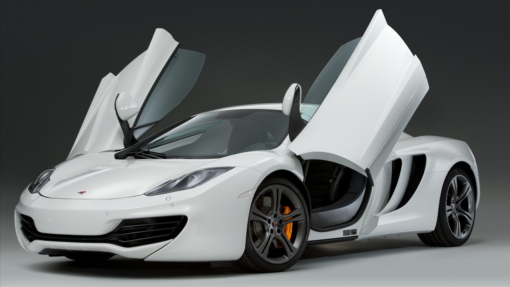

<!DOCTYPE html>
<html lang="en">
<head>
    <meta charset="UTF-8">
    <title>15放大镜</title>
    <style>
    .zoom{position:relative;width:300px;overflow:hidden;}
    .zoom .minzoom{display:none;position: absolute;width:30px;height:30px;border:1px solid #fc0;background-color:#ff0;background-color: rgba(255,255,0,.3);filter:alpha(Opacity=30);}
    .bigzoom{display:none;position: absolute;width:400px;height:300px;overflow:hidden;}
    .bigzoom img{position: absolute;left:0;right:0;}
    </style>
    <script>
        document.addEventListener('DOMContentLoaded',()=>{
            /*
                1）获取元素
                2）鼠标移入小图
                    * 创建放大镜
                    * 创建大图
                3）鼠标移动
                    * 放大镜跟随
                    * 显示大图对应区域
                4）鼠标离开小图
                    * 移除放大镜
                    * 移除大图
             */
            var zoom = document.querySelector('.zoom');
            var smallPic = zoom.querySelector('img');

            // 全局变量
            var minZoom;
            var bigZoom;
            var bigPic;
            var ratio;

            // 初始化
            // 创建放大镜
            // 并写入.zoom
            minZoom = document.createElement('span');
            minZoom.className = 'minzoom';
            zoom.appendChild(minZoom);

            // 创建大图
            bigZoom = document.createElement('div');
            bigZoom.className = 'bigzoom';
            bigPic = document.createElement('img');
            bigPic.src = smallPic.dataset.big;
            bigZoom.appendChild(bigPic);

            document.body.appendChild(bigZoom);

            // 获取图片的宽高
            bigPic.onload = function(){
                // 计算大图与小图的比例
                ratio = bigPic.offsetWidth/smallPic.offsetWidth;
            }

            // 2）鼠标移入小图
            zoom.onmouseenter = ()=>{
               bigZoom.style.display = 'block';
               minZoom.style.display = 'block';
               
               ratio = bigPic.offsetWidth/smallPic.offsetWidth;

               // 改变放大镜的宽高
               minZoom.style.width = bigZoom.offsetWidth/ratio + 'px';
               minZoom.style.height = bigZoom.offsetHeight/ratio + 'px';
            }

            // 3）鼠标移动
            zoom.onmousemove = (e)=>{

                // 计算移动的距离
                var left = e.clientX - zoom.offsetLeft - minZoom.offsetWidth/2;
                var top = e.clientY - zoom.offsetTop - minZoom.offsetHeight/2;

                // 放置移出小图之外的区域
                if(left<0){
                    left = 0;
                }else if(left > smallPic.offsetWidth - minZoom.offsetWidth){
                    left = smallPic.offsetWidth - minZoom.offsetWidth;
                }

                if(top<0){
                    top = 0;
                }else if(top>smallPic.offsetHeight - minZoom.offsetHeight){
                    top = smallPic.offsetHeight - minZoom.offsetHeight;
                }

                // 放大镜跟随效果
                minZoom.style.left = left + 'px';
                minZoom.style.top = top + 'px';


                // 显示大图对应区域
                bigPic.style.left = -left*ratio + 'px';
                bigPic.style.top = -top*ratio + 'px';
            }

            // 4）鼠标离开小图
            zoom.onmouseleave = ()=>{
                bigZoom.style.display = 'none';
                minZoom.style.display = 'none';
                // minZoom.parentNode.removeChild(minZoom);
                // bigZoom.parentNode.removeChild(bigZoom);
            }

        })
    </script>
</head>
<body>
    <div class="zoom">
        
        <!-- <div class="minzoom"></div> -->
    </div>
    <!-- <div class="bigzoom"></div> -->
</body>
</html>